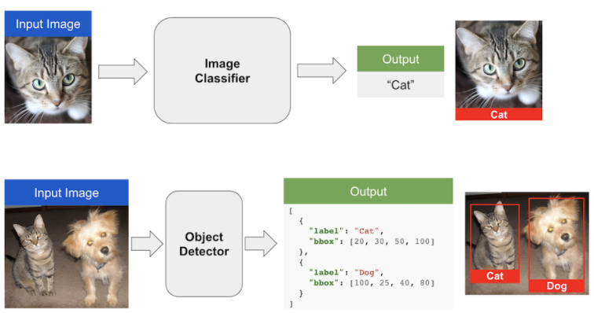
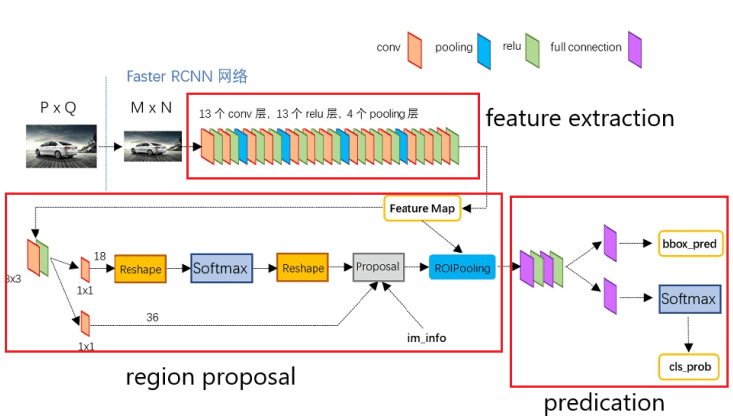
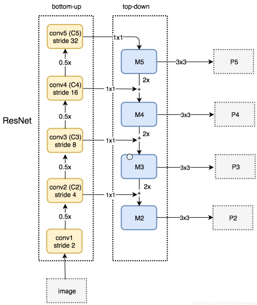
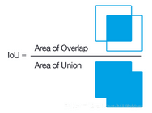

Faster R-CNN

Faster R-CNN将Fast R-CNN中的Selective Search换成了Region Proposal Network，这样位置网络就和分类网络结合起来，于是CNN提取的特征feature maps被两者共用，不仅极大加快了速度，还提升了精度（两者会互相促进）。

Faster R-CNN的训练过程：
- 提取图片features
- 创建目标anchors
- RPN网络输出这些anchors的locations和objectness分数
- 取locations和objectness分数最好的前N个anchors，又称为proposal layer
- 将这N个anchors输入网络，取得更精确的locations得分和classification得分
- 计算步骤3中的
rpn_cls_loss和rpn_reg_loss - 精算步骤5中的
roi_cls_loss和roi_reg_loss
1. Input
我们用PyTorch官方实现的Faster R-CNN网络来学习，论文中使用提取features的backbone网络是VGG，PyTorch优化使用了ResNet-50并结合了FPN，我们先看下第一层transform：
# get the pretrained model from torchvision.models
# Note: pretrained=True will get the pretrained weights for the model.
# model.eval() to use the model for inference
model = torchvision.models.detection.fasterrcnn_resnet50_fpn(pretrained=False)
model.eval()
list(model._modules.items())[0]
可以看出先对数据做了归一化Normalize，然后调整图片大小（等比缩放），在保证最长边不超过1333情况下，最短边缩放到800：
def resize(image, min_size=800, max_size=1333):
im_shape = torch.tensor(image.shape[-2:])
min_s = float(torch.min(im_shape))
max_s = float(torch.max(im_shape))
scale_factor = min_size / min_s
if max_s * scale_factor > max_size:
scale_factor = max_size / max_s
return(torch.nn.functional.interpolate(
image[None], scale_factor=scale_factor, mode='bilinear', recompute_scale_factor=True,
align_corners=False)[0])
image = torch.rand(3, 200, 300) # get some dummy image
resize(image).shape
保证输入图片最长边不超过1333，避免内存爆炸：
image = torch.rand(3, 3000, 1300) # get some dummy image
print(resize(image).shape)
del image, model
2. Feature Extraction
Faster R-CNN网络主要有三个部分，如下图所示，分别为feature extraction、region proposal和predication：

2.1 FPN
注意上图论文中的feature extraction使用的backbone是VGG，PyTorch官方版本使用了带FPN的ResNet-50。如下图所示，ResNet-50四个阶段的features都被使用了。低层的特征语义信息比较少，但是目标位置准确；高层的特征语义信息比较丰富，但是目标位置比较粗略。将低层的特征和高层的特征融合起来，有利于网络性能。另外目标框会随着features减小而减小，这样在被缩小了32倍的最后一层features上，小目标就会变得非常小，难以被检测出来，于是融合后不同尺度的特征负责检测不同大小的物体。

如图所示，高层的特征会被放大2倍后，加上经过1x1卷积的底层特征，下面是结合了FPN的ResNet-50的输出：
from torchvision.models.detection.backbone_utils import resnet_fpn_backbone
backbone = resnet_fpn_backbone('resnet50', pretrained=False)
x = torch.rand(1, 3, 800, 800) # get some dummy image
output = backbone(x)
for k, v in output.items():
print('features', k, v.shape)
del x, output, backbone
features 0/1/2/3分别对应图中的P2/3/4/5，接下来就需要在这些features上预测原图中的物体。
3 Region Proposal Network

如上图所示，假设backbone的stride=4或者说原图Image被down sample了4倍，由于多次卷积操作，feature_map中一个cell的感受野要远大于左边的一个grid，甚至能达到整幅图的区域。上文中带FPN的ResNet-50提供了4种尺寸的feature maps，我们可以用这些feature maps中的cells来预测原图中的物体。
3.1 Anchors
因为物体的形状和大小各种各样，所以一个cell需要能够预测形状和大小不同的物体（物体中心靠近cell中心）。如果直接让网络学习各种不确定的目标框会很难，所以我们对这些cells预先设置了一些anchors，让cells基于这些anchors预测大小和位置的偏移量。
设anchors的大小为s，宽高比为r>0，那么anchors的宽和高分别为s/\sqrt{r}和s\sqrt{r}。如果r有3种，s有2种，那么组合起来能得到6种框：
ratio = [0.5, 1, 2]
scale = [16., 32.]
# [width, height]
anchors = [[s*np.sqrt(1/r), s*np.sqrt(r)] for s in scale
for r in ratio]
np.around(anchors, 2)
假设图像大小为64\times 64，我们看下上面6种anchors画在中心的样子：
from matplotlib.patches import Rectangle
def plot_init_grid(ax, w=416, h=416, grid=13):
ax.set_xticks(np.arange(0, w+1, w/grid))
ax.set_yticks(np.arange(0, h+1, h/grid))
ax.xaxis.tick_top()
ax.set_aspect('equal')
plt.xlim([0, w])
plt.ylim([0, h])
ax.invert_yaxis()
def plot_anchors(cx, cy, anchors):
for w, h in anchors:
xy = (cx-w/2., cy-h/2.)
rect = Rectangle(xy, w, h, linewidth=2, fill=False, linestyle='-.',
edgecolor=np.random.rand(3,))
ax.add_patch(rect)
# 图片尺寸
img_w = 64
img_h = 64
cx = img_w / 2
cy = img_h / 2
plt.figure(figsize=(6, 6))
ax = plt.gca()
plot_init_grid(ax, img_w, img_h, grid=1)
plt.plot(cx, cy, '.r', markersize=24)
plot_anchors(cx, cy, anchors)
plt.show()

我们可以脑补一下feature maps的每个cell都有预先设定的anchors，于是Region Proposal Network（RPN）就要对这些anchors进行处理。
- 训练时，凡是越过图片边界（cross the boundary of the image）的anchors都被忽略
- 测试时，越过边界的anchors被截断在边界处
3.2 RPN
如下图所示，假设每个cell有k个anchors，于是RPN要判断这k个anchors否为物体（分类，classification layer），还要判断准确的位置和形状（回归，regression layer），在这之前先做一次3x3卷积得到channel数为256-d的featuer maps。

RPN网络代码如下：
import torch.nn.functional as F
class RPNHead(nn.Module):
"""
Adds a simple RPN Head with classification and regression heads
Arguments:
in_channels (int): number of channels of the input feature
num_anchors (int): number of anchors to be predicted
"""
def __init__(self, in_channels, num_anchors):
super(RPNHead, self).__init__()
self.conv = nn.Conv2d(in_channels, in_channels,
kernel_size=3, stride=1, padding=1)
self.cls_logits = nn.Conv2d(in_channels, num_anchors,
kernel_size=1, stride=1)
self.bbox_pred = nn.Conv2d(in_channels, num_anchors * 4,
kernel_size=1, stride=1)
for layer in self.children():
torch.nn.init.normal_(layer.weight, std=0.01)
torch.nn.init.constant_(layer.bias, 0)
def forward(self, x):
# type: (List[Tensor]) -> Tuple[List[Tensor], List[Tensor]]
logits = []
bbox_reg = []
for feature in x:
t = F.relu(self.conv(feature))
logits.append(self.cls_logits(t))
bbox_reg.append(self.bbox_pred(t))
return logits, bbox_reg
stride=4/8/16/32），所以RPNHead的forward()默认输入x为iteratble类型的，例如[fm_1/4, fm_1/8, fm_1/16, fm_1/32]。整个过程如下图所示（设k=3）：

需要注意的是，这里黄色scores的channels=3，而非2k=10，这是因为是判断框是否为物体的分类函数用了逻辑回归，直接输出的是logit而非概率，loss函数用了binary_cross_entropy_with_logits，应该是为了优化cross entropy和sigmoid的联合求导（类似softmax和corss entropy联合求导）。假设w,h=32,c=10，那么对应的代码为：
x = torch.rand(1, 10, 32, 32)
scores, coordinates = RPNHead(10, 3)([x])
print("scores:", scores[0].shape)
print("coordinates:", coordinates[0].shape)
del x, scores, coordinates
3.3 Bounding Box Regression
现在RPN预测的物体bounding box。如下图所示，x_a, y_a, w_a, h_a是某一个anchor，x, y, w, h是RPN基于这个anchor预测的bbox，x^*, y^*, w^*, h^*是对应目标的ground truth。

那么将中心坐标偏移量和宽高比分别归一化后可以得到t_x, t_y, t_w, t_h，也就是RPN网络需要学习输出的bbox信息，而t_*, t_*, t_*, t_*是ground truth，两者结合可以计算出bounding box regreesion分支的loss。
分别除以w_a, h_a进行归一化利于网络学习，但是为什么宽高比值都加了一个log函数呢？因为宽高比必须大于等于0，所以变成了一个带约束的优化问题，而w/w_a=e^{t_w}恒大于0，这样网络输出的t_w, t_h就没有限制了！！！
3.4 Training RPN
anchors根据有无物体分为正样本和负样本：如果一个anchor和某一个gt框的IoU大于0.7就被认为是正样本，如果特殊情况下某个gt框没有任何一个anchor与之对应，就选IoU最高的那个anchor；凡是IoU小于0.3的都被认为是负样本。
尽管可以所有的正负样本都可以参与训练，但是因为图片中目标个数有限，所以会导致大多数anchors都是负样本（背景）。例如k=9，feature maps的 w=h=50时，anchors总数为9\times 50 \times50=22500个，这样正负样本很不平衡，于是作者在一张图中随机各选取128个正负样本组成256个anchors的mini batch。
RPN网络的Loss函数如下，N_{reg}只包括p^*=1的正样本：
3.5 NMS
因为RPN输出的目标框会有很多重叠的（如下图所示），所以我们需要使用NMS进行过滤。

from matplotlib.patches import Rectangle
def plt_boxes(bboxes, ax):
""" matplotlib Rectangle --- (xy, w, h)
"""
for box in bboxes:
x1, y1, x2, y2, _ = box
w = x2 - x1
h = y2 - y1
ax.add_patch(Rectangle((x1, y1), w, h, linewidth=2, fill=False,
edgecolor=np.random.rand(3,)))
plt.xlim([0, max(bboxes[:, 2])+20])
plt.ylim([0, max(bboxes[:, 3])+20])
ax.xaxis.tick_top()
ax.invert_yaxis()
# [x1, y1, x2, y2, score]
dets = np.array([[218, 322, 385, 491, 0.98],
[247, 312, 419, 461, 0.83],
[237, 344, 407, 510, 0.92],
[757, 218, 937, 394, 0.96],
[768, 198, 962, 364, 0.85],
[740, 240, 906, 414, 0.83],
[1101, 84, 1302, 303, 0.82],
[1110, 67, 1331, 260, 0.97],
[1123, 42, 1362, 220, 0.85]])
ax = plt.gca()
plt_boxes(dets, ax)
plt.show()

首先按照分类得分高低将框排序，然后遍历（已删除的不再遍历），删除和当前框\text{IoU}>\text{threshold}（论文中为0.7）的框。
IoU的公式和示意图如下：

def nms(dets, thres):
"""
@dets, detecion results, shape: [batch, 5], form: [[x1, y1, x2, y2, score]]
@thres, threshold
"""
x1 = dets[:, 0]
y1 = dets[:, 1]
x2 = dets[:, 2]
y2 = dets[:, 3]
scores = dets[:, 4]
area = (x2 - x1 + 1) * (y2 - y1 + 1)
order = scores.argsort()[::-1]
kept_idx = []
while order.size > 0:
i = order[0]
kept_idx.append(i)
xx1 = np.maximum(x1[i], x1[order[1:]])
yy1 = np.maximum(y1[i], y1[order[1:]])
xx2 = np.minimum(x2[i], x2[order[1:]])
yy2 = np.minimum(y2[i], y2[order[1:]])
w = np.maximum(0.0, xx2-xx1+1)
h = np.maximum(0.0, yy2-yy1+1)
inter = w * h
IoU = inter / (area[i] + area[order[1:]] - inter)
inds = np.where(IoU 0.7的为正样本， threshold
are chosen.
"""
img = Image.open(img_path)
transform = T.Compose([T.ToTensor()])
img = transform(img)
pred = model([img])
pred_class = [COCO_INSTANCE_CATEGORY_NAMES[i] for i in list(pred[0]['labels'].numpy())]
pred_boxes = [[(i[0], i[1]), (i[2], i[3])] for i in list(pred[0]['boxes'].detach().numpy())]
pred_score = list(pred[0]['scores'].detach().numpy())
pred_t = [pred_score.index(x) for x in pred_score if x>threshold][-1]
pred_boxes = pred_boxes[:pred_t+1]
pred_class = pred_class[:pred_t+1]
return pred_boxes, pred_class
def object_detection_api(img_path, threshold=0.5, rect_th=3, text_size=3, text_th=3):
"""
object_detection_api
parameters:
- img_path - path of the input image
- threshold - threshold value for prediction score
- rect_th - thickness of bounding box
- text_size - size of the class label text
- text_th - thichness of the text
method:
- prediction is obtained from get_prediction method
- for each prediction, bounding box is drawn and text is written
with opencv
- the final image is displayed
"""
boxes, pred_cls = get_prediction(img_path, threshold)
img = cv2.imread(img_path)
img = cv2.cvtColor(img, cv2.COLOR_BGR2RGB)
for i in range(len(boxes)):
cv2.rectangle(img, boxes[i][0], boxes[i][1],color=(0, 255, 0), thickness=rect_th)
cv2.putText(img,pred_cls[i], boxes[i][0], cv2.FONT_HERSHEY_SIMPLEX, text_size, (0,255,0),thickness=text_th)
plt.figure(figsize=(20,30))
plt.imshow(img)
plt.xticks([])
plt.yticks([])
plt.show()
object_detection_api("../_files/people.jpg", threshold=0.8)

object_detection_api('../_files/traffic-143391_960_720.jpg', threshold=0.8, text_size=1)

4. 推荐阅读
- Faster R-CNN Object Detection with PyTorch
- 捋一捋pytorch官方FasterRCNN代码
- 一文读懂Faster RCNN
- Guide to build Faster RCNN in PyTorch
参考资料：
- Yang Dawei, Faster R-CNN原理与使用 (Pytorch), 云飞机器人实验室
本条目贡献者：